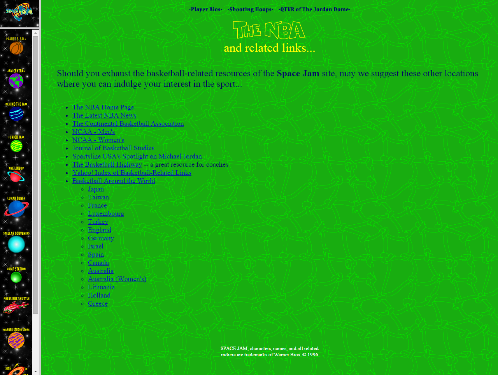
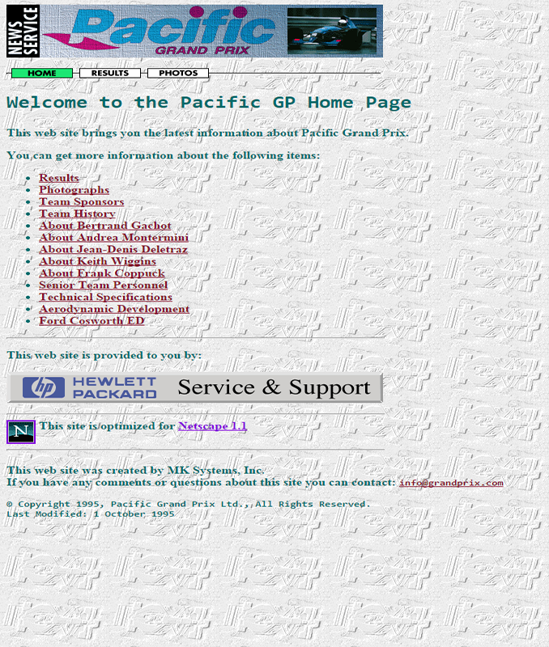
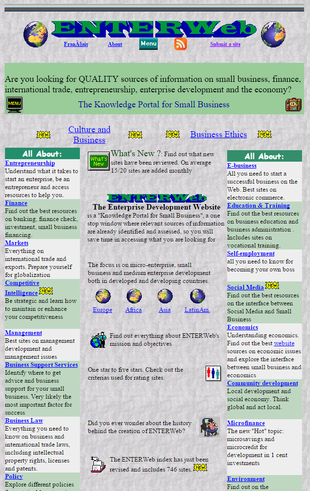
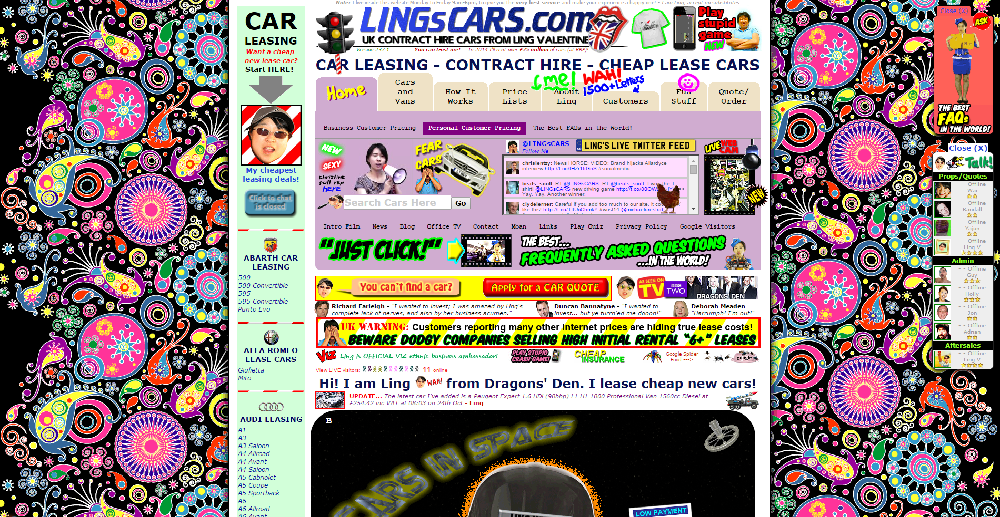
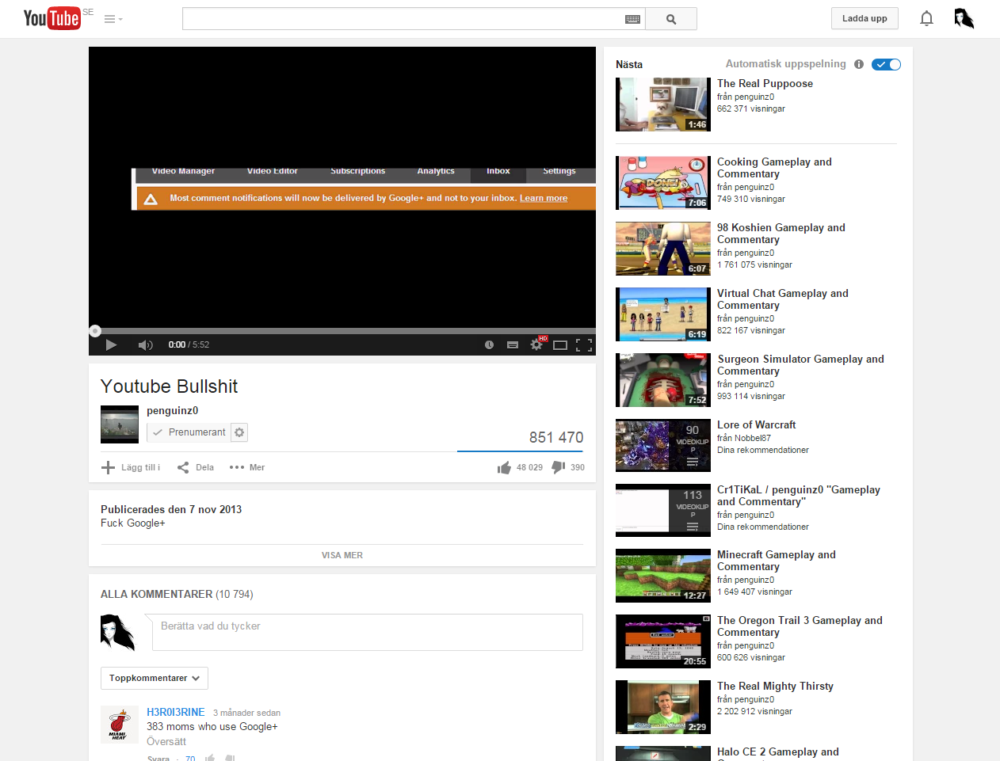

Webbdesignen
Hur den såg ut och ser ut
Gjord av Mikael Larsson
Vad är en bra webbdesign?
Bra menyer?
Snygga bilder?
Lite text?
Mycket text?
Video/musik spelare?
90-talets vackra designer
SpaceJam hemsida från 1996
Pacific från 1995

Ente från ????
Viktiga saker att tänka på inom design
- Enkel meny
- Design som inte förvirrar användaren
- Ha allt lättåtkomligt
Några "syndare" inom webbdesign
LingCars
Uppdaterad design
Youtube
Okej att gå utanför "The Safezone"?
En bra hemsida visar klart och tydligt vart menyn,inloggning och liknande finns oavsett språk